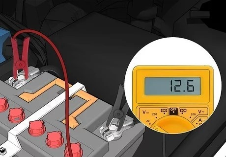
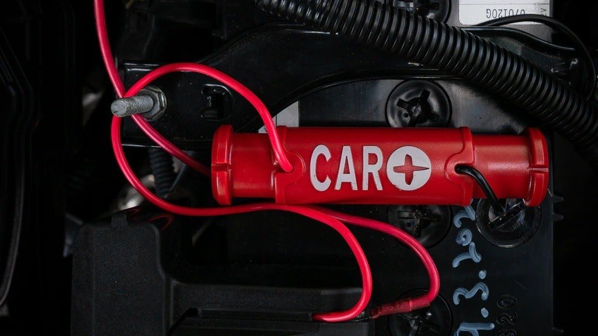

A car battery, while often overlooked, is a crucial component that ensures your vehicle's smooth operation. Without a functioning battery, your car won't start. Many drivers have experienced the frustration of a dead battery, missing important appointments, or facing unexpected delays. While various factors can contribute to battery failure, understanding common signs of battery aging can help you prevent these inconveniences.
One of the most noticeable indicators of a failing battery is a change in starting performance. If you notice that your car takes longer to start than usual, it could be a sign that the battery is losing its capacity. For instance, if the starting time increases from one second to three seconds, it's a red flag that your battery may be nearing the end of its lifespan.
Another symptom of a failing battery is intermittent electrical issues. If you frequently experience problems with your clock resetting, one-touch window controls malfunctioning, or other electrical components behaving erratically, it's likely due to insufficient battery power. These issues arise when the battery voltage drops too low during engine startup, causing the car's computer to reset.
If you've been away from your car for an extended period and it fails to start when you return, it's another strong indication of a battery problem. A healthy battery should be able to hold a charge for several days, even if the car isn't driven. Difficulty starting or a complete failure to start after a few days of inactivity points to a battery that needs to be replaced.

To assess the health of your car battery, you can perform a simple voltage check. The nominal voltage of a car battery is 12V, but the actual voltage should be slightly higher when the engine is off. Use a multimeter to measure the voltage between the positive and negative terminals. If it's below 12V, your battery may be low on charge and require recharging. If the voltage drops below 11.5V, it's a clear sign that the battery is significantly depleted and needs to be replaced.
While a voltage measurement provides a basic assessment, a more accurate diagnosis involves measuring the battery's dynamic voltage. This test involves starting the engine while monitoring the voltage with a multimeter. If the voltage drops below 9V, it indicates a severely compromised battery.
It's important to note that even a battery that starts your car without issue may be nearing the end of its life. If you don't drive your car frequently, the battery can gradually lose its charge over time. It's recommended to have your battery checked every few months, especially if you don't drive regularly.

While replacing a car battery may seem like a minor expense, it's a worthwhile investment to ensure your vehicle's reliable operation. By understanding the signs of a failing battery and taking proactive steps to maintain its health, you can avoid the inconvenience and frustration of a dead battery.